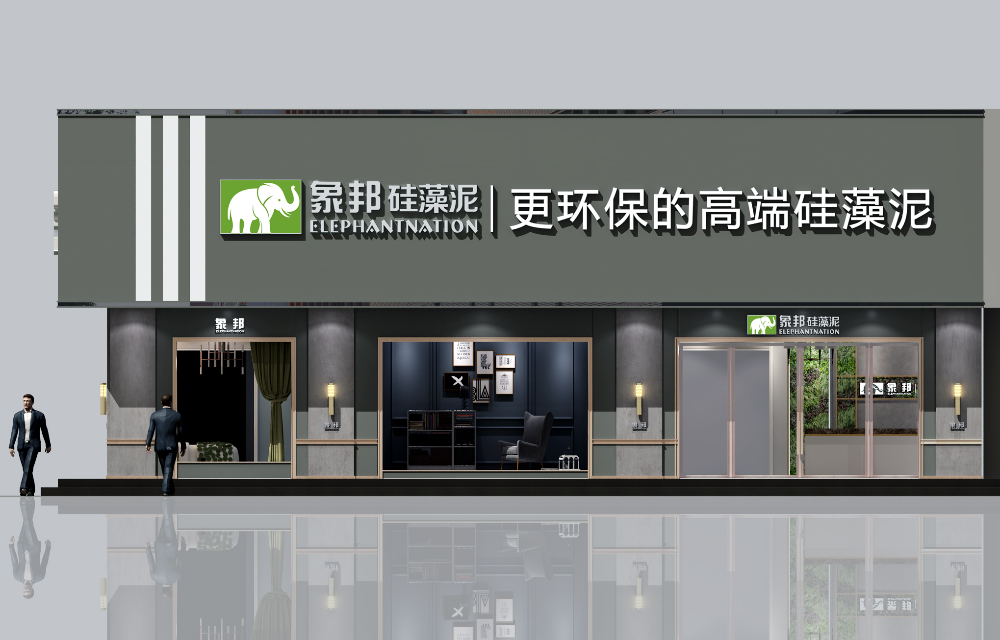

吉林省象邦环保科技有限公司（以下简称"象邦"）是一家集高端硅藻泥壁材研发、生产、设计、营销、服务为一体的综合型企业。象邦生产基地与运营总部位于吉林省，原材矿土取自中国东北长白山山脉，专业生产健康功能型高端硅藻泥系列产品。
好品源自好材。象邦硅藻泥对原材硅藻土的供应商严格甄选，采用最高标准，与占国内优质硅藻土储量约75%远通矿业达成深度战略合作。公司引入国际最先进的生产设备、工艺及研发人员，产品环保性能更优越，花色款式融入国粹经典与最新国际时尚元素，一经推出，便拥有了极高的口碑，品牌形象同时登陆CCTV，引领行业风向标。
象邦秉承"把象邦产品质量做到极致，把象邦客户服务做到极致，把象邦品牌推广做到极致"的服务理念和"打造绿色家居，刷新健康未来"的企业使命，致力于为消费者提供环保舒适、高品质的健康生活。为了以最快的速度服务全国代理商及顾客，公司分别在吉林、安徽、广东设立了象邦硅藻泥客户服务运营中心。
公司产品已通过国家行业检测标准，同时通过了国内外多项权威认证。实验证明，象邦硅藻泥具有净化甲醛、调湿、吸音降噪、防火阻燃、防霉抗菌等优越性能，是家居、酒店、幼儿园、学校、公建等首选高端环保壁材。
